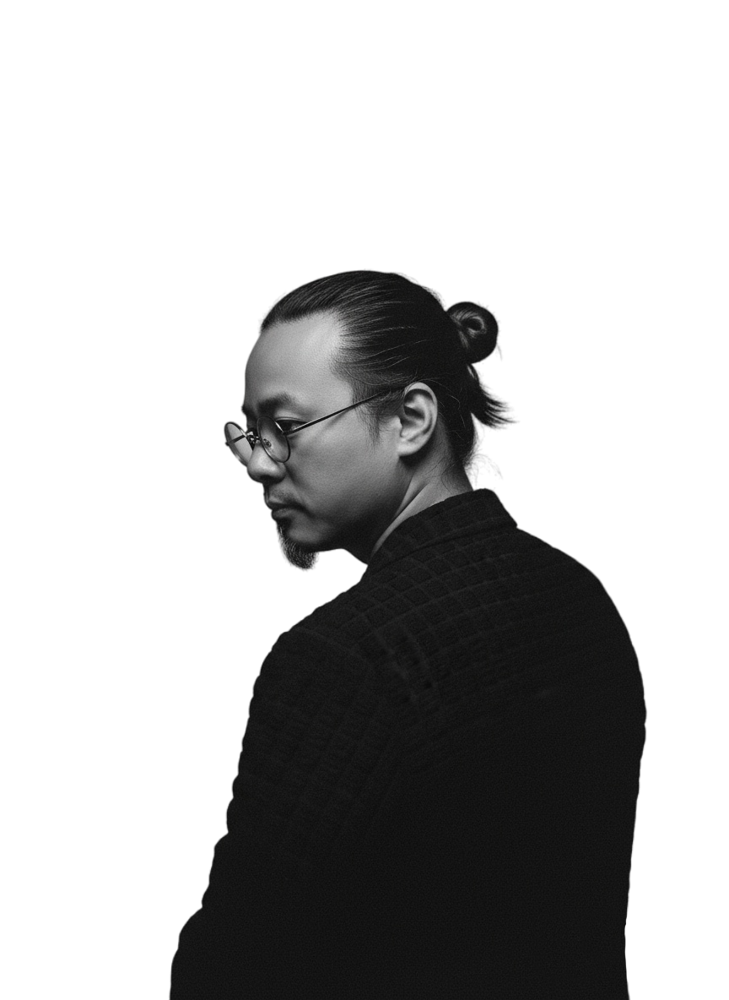

RYAN
LIU

進修於意大利巴勒莫美院，多次日本遊學。他曾任職於國內一線上市設計院副院長，並擁有與全球頂級設計事務所合作經歷，參與和主理過國內外多類型奢華別墅與知名酒店。
Advanced Studies at Accademia di Belle Arti di Palermo, Italy, and multiple study tours in Japan. Former Vice President of a top-tier listed architectural design institute in China, with collaboration experience with world-renowned top design firms. He has participated in and led a wide range of luxury villas and prestigious hotels both domestically and internationally.
CONTACT
劉力寧
高端全案室內設計師 · EST. 2001